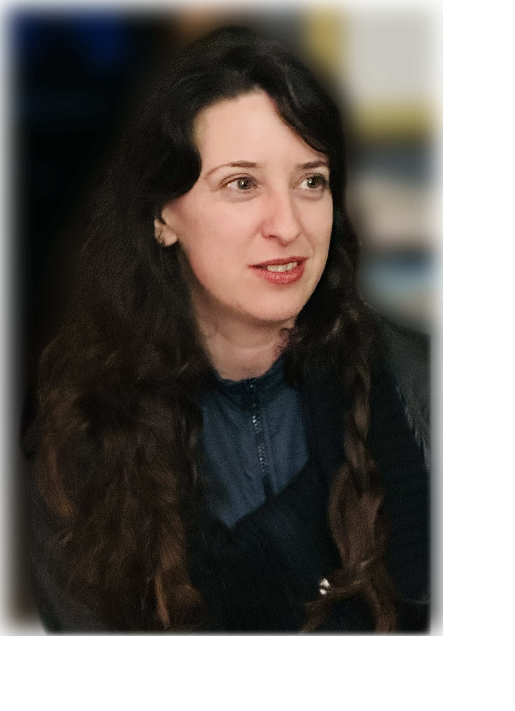

About
I am a multidisciplinary researcher here to further our understanding of living systems! I’ve studied Design and Computation (SmArchs) as well as Cognitive Science and Artificial Intelligence at MIT (CSAIL). I also did a Master’s in Evolutionary Neuroscience (Psychology) where I studied areas in the brain that correspond to sensory processing and how these change across mammals. I am very interested in the evolution of sensory systems, how sensory capacities develop, change, shape information and how this relates to other cognitive processes including learning, causal reasoning and memory.
I am also a “metascience” researcher: studying how science itself, philosophies of theory and theory building and explanation, evolved out of collective cognitive processes, and continues to evolve. Currently working toward a PhD dissertation on the computational transition from unicellular to multicellular in the slime mold Physarum polycephalum as well as Critical Simulation Studies at University of California, Davis and collaborating with labs on the questions in this website.
Contact: jlitmancleper@ucdavis.edu
I am a fan of the kingdom fungi and family physarum (amoeba, slime molds) as well as parasitism in plants and wasps, and will likely find ways to include them here too.
:)
